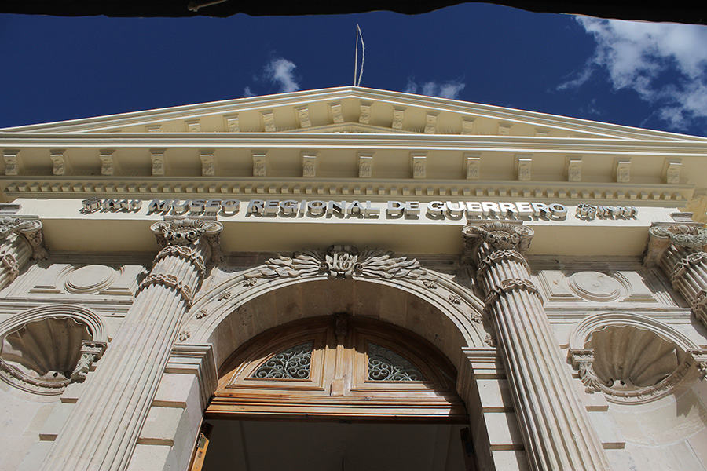
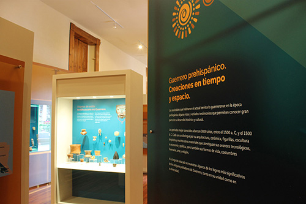
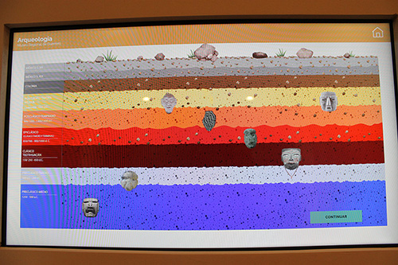
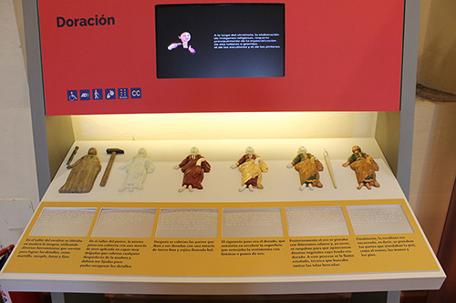
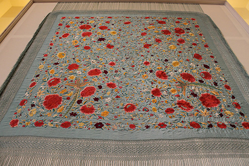
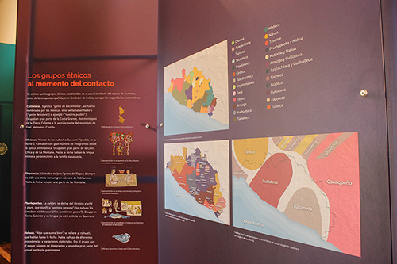
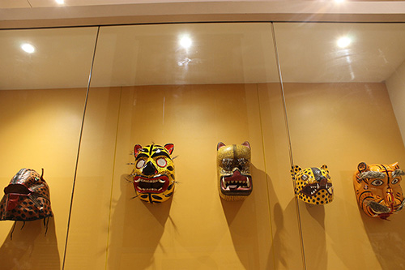
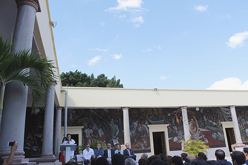

Inauguración del Museo Regional de Guerrero, Chilpancingo de los Bravo, Guerrero, a 20 de diciembre del 2016
Ana Elena Vivas Moreno

Figura 1. Fachada del Museo Regional de Guerrero. Ana Vivas, 2016.
El Museo Regional de Guerrero es uno de los pocos museos localizados en el territorio de este estado que poseen relevancia tanto por su acervo como por estar ubicado en un edificio considerado monumento histórico, además de localizarse en la plaza cívica Primer Congreso de Anáhuac de la ciudad de Chilpancingo de los Bravo, capital de la entidad.
En 2011, el monumento histórico que alberga al museo se vio afectado por un sismo, sufriendo severos agrietamientos debido al desnivel de piso generado a partir del movimiento tectónico, cuyos efectos fueron transmitidos a los murales que se encuentran en los muros de los corredores.
Debido a estas condiciones, el recinto cerró sus puertas para dar inicio a los trabajos de restauración del inmueble y de los murales, con el apoyo de restauradores pertenecientes la Coordinación Nacional de Conservación del Patrimonio Cultural.
Una vez concluida la estabilización del edificio, se presentó el proyecto de reestructuración del guion museográfico, el cual añadió información recabada por investigadores del INAH-Guerrero y de la Universidad Autónoma de Guerrero para actualizar lo presentado e incorporar datos que complementaran la cronología comprendida desde los asentamientos prehispánicos hasta la actualidad.
Esto también impactó el número de piezas en exhibición, pues el nuevo guion permitió la incorporación de gran parte del acervo albergado en la bodega del museo, así como el de piezas que los mismos investigadores consideraron pertinentes o bien, objetos creados exprofeso para ser exhibidos.

Figura 2. Sala Guerrero Prehispánico. Ana Vivas, 2016.
El recorrido del museo puede llevarse a cabo en un tiempo aproximado de una hora. A través de sus nueve salas, se presenta de manera cronológica la historia de las regiones del estado, desde la época prehispánica hasta la actualidad, a través de las siguientes temáticas: Guerrero prehispánico; dominio español e inicios de la rebelión en América; la revolución suriana, y Guerrero, el pueblo del jaguar.
El recorrido ofrece la posibilidad de admirar, en los corredores, los murales que relatan pictóricamente estos periodos. Debo apuntar que estas obras son de la autoría de los pintores Roberto Cueva del Río y Luis Arenal.
La sala de introducción nos presenta un resumen de lo que se observará con amplitud en las siguientes salas, dedicándose a la caracterización de las regiones del estado, así como al rescate de las peculiaridades en la historia del inmueble: desde su construcción y función como palacio de gobierno, hasta su posterior adecuación como museo, además de las diversas afectaciones sufridas por la actividad tectónica del estado en varios momentos de la historia.
El itinerario continúa con la introducción al periodo y culturas prehispánicas en el territorio que actualmente pertenece a Guerrero, desde los asentamientos olmecas del preclásico hasta el dominio azteca. Destaca la cultura Mezcala como una de las más importantes, la cual llegó a tener presencia en las ofrendas de Templo Mayor.
En estas salas también se destaca información de otro tipo de patrimonio prehispánico: el arte rupestre, que en este caso se vio influenciado por la cultura olmeca, localizado en Oxtotitlán, Juxtlahuaca y Cacahuaziziqui.
Algo rescatable de estas salas es la utilización de pantallas en las que se expone a grandes rasgos el trabajo arqueológico, de excavación y formación de cronologías, a partir de los objetos y los rasgos que los hacen particulares. En este caso se emplea para explicar qué vestigios arqueológicos pueden localizarse respecto a la temporalidad.

Figura 3. Pantalla táctil con información de arqueología. Ana Vivas, 2016.
Las salas correspondientes a la época de contacto con los españoles y con otras razas con quienes hubo una mezcla importante permite conocer otros aspectos tanto de la vida cotidiana como de la producción de bienes e intercambio comercial. Sobre esto último destaca el intercambio a través de la Nao o Galeón de Manila al puerto de Acapulco.

Figura 4. Proceso de producción de esculturas con hoja de oro. Ana Vivas, 2016.
En esta sección no debemos perder de vista las reproducciones de la Nao, objetos que eran comercializados de China y Filipinas, como mantones y porcelana. Más adelante, podemos observar ejemplos del arte religioso tales como pinturas de caballete, esculturas y objetos de uso litúrgico en general.

Figura 5. Mantón obtenido del intercambio del Galeón de Manila. Ana Vivas, 2016.

Figura 6. Mapa de grupos étnicos al momento del contacto con los españoles. Ana Vivas, 2016.
En esta sección se privilegia también el uso de mapas que rescatan las rutas comerciales vigentes al momento de la conquista, así como la geografía ocupada por los grupos indígenas al momento del contacto, además de las rutas de evangelización seguidas por los religiosos.
En cuanto al periodo de la Guerra de Independencia se resalta la sobresaliente labor de los caudillos guerrerenses Vicente Guerrero y los hermanos Bravo, entre otros, además de reconocerse al territorio estatal como lugar estratégico durante distintos momentos de la lucha, como fue la realización del Primer Congreso de Anáhuac, donde se emitieron los Sentimientos de la Nación, documento redactado por José María Morelos y Pavón.
Continuando con la cronología, la siguiente sala corresponde al periodo de la Revolución Mexicana, donde también se destaca la participación de algunos caudillos surianos. A través de gráficas como litografías, fotografías y mapas se intenta dar una idea de los movimiento insurrectos en el territorio guerrerense durante este periodo.
Resulta enriquecedor reconocer en esta sección, la producción artística de aquellos momentos, como la música, especialmente los corridos revolucionarios, que se difundieron con gran éxito en las filas revolucionarias del sur, perdurando hasta nuestros días.
En la última sala, que comienza con la premisa “Guerrero, el pueblo del jaguar/ tigre”, se nos introduce, bajo una perspectiva antropológica, a lo que hoy es cada una de las ocho regiones del estado. En esta sección se utilizan en su mayoría recursos audiovisuales para mostrar algunas de las prácticas culturales más extensas en el estado, como son las asociadas a la petición de lluvias y las buenas cosechas. Por otro lado, con reproducciones y maquetas a escala, se explican los procesos de producción artesanal, como es la confección de tejidos en telar de cintura, o bien, de bebidas tan reconocidas como el mezcal.

Figura 7. Mascaras de jaguar/tigre. Ana Vivas, 2016.
Desde el 20 de diciembre de 2016, tras cinco años de trabajo, se reabren las puertas del Museo Regional de Guerrero.
En este acto inaugural se dieron cita diversas personalidades como el coordinador nacional de Centros INAH, José Muñoz Bonilla; el coordinador nacional de museos y exposiciones, José Enrique Ortiz Lanz; el secretario de Cultura de Guerrero, Mauricio Leyva; el presidente municipal de Chilpancingo, Marco Antonio Leyva Mena; la directora del Centro INAH en el estado, Blanca Jiménez Padilla, y la directora del recinto, Maura Liliana Ortiz Carrasco.
Durante su intervención, los miembros del presídium reconocieron la labor realizada por el INAH para llegar a este día, así como la importancia de la cultura en Guerrero, y la de este museo como espacio didáctico para niños y jóvenes. Posteriormente, se realizó el corte de listón y el primer recorrido guiado por toda la exposición.
La reapertura del Museo Regional de Guerrero constituye, sin duda, una gran satisfacción para quienes han dedicado su tiempo y esfuerzo para la creación del guion, el montaje y la investigación.
Asimismo, deben reconocerse las novedades implementadas como son la utilización de cedulario en sistema braille para un mejor acceso del público discapacitado, así como la generación de la aplicación a través de la cual se puede dar un recorrido 360° por los corredores del museo. Este recurso es de acceso gratuito para los sistemas iOs y Android.
La acertada interacción entre diferentes especialistas, investigadores e instituciones que compartieron el objetivo común de lograr la exitosa reapertura del museo, se ve plasmada en el discurso museográfico actual, con información veraz y muy completa para el disfrute del visitante.
Otro punto a destacar es la importancia que tiene este museo para la ciudad capital del estado. Si bien Chilpancingo y todo el estado se han visto embargados en noticias y una realidad violenta, este tipo de espacios y eventos permiten a la comunidad volver a lograr una cohesión social y crear un real apego a su patrimonio, no solo material sino práctico. Por tanto, me parece importante que se haya consumado por fin esta reapertura, pues entre tanto desconcierto, la cultura puede ser una forma de reconstruir lazos sociales que son necesarios para los guerrerenses.

Figura 8. Presídium de honor durante la inauguración del MRG. Ana Vivas, 2016.
Como citar esta colaboración:
Apellido, nombre (año), “Título del artículo”, en Archivo Churubusco, año 1, número 2, disponible en -dirección en internet-, consultado -día, mes, año-.
Ir al cielo